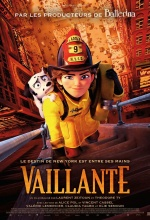

Voir la Bande-annonce
vaillante
Fantastique
Alice Pol,
Vincent Cassel,
Valérie Lemercier,
Claudia Tagbo
De LAURENT ZEITOUN
Depuis qu'elle est enfant, Georgia Nolan n’a qu’une seule ambition : devenir pompier comme son père ! Hélas, à New York en 1932, les femmes n’ont pas le droit d'exercer cette profession. Quand les pompiers de la ville disparaissent un-à-un dans de mystérieux incendies dans des théâtres de Broadway, Georgia y voit une occasion en or
Voir la Bande-annonce